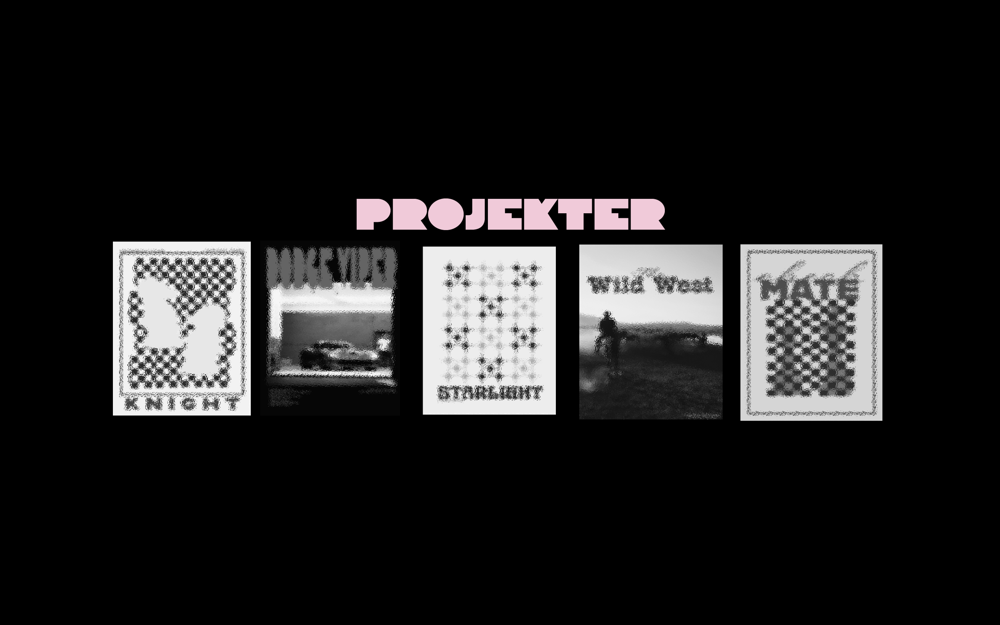
2.SEM EKSAMEN // KARAKTER: 12 // LINK TIL VORES HJEMMESIDE
I dette gruppeprojekt udviklede vi et nyt digitalt og visuelt univers for Countryside Adventure Minigolf med fokus på en moderne og brugervenlig oplevelse. Gennem research, interviews og brugertests undersøgte vi målgruppens behov og brugte blandt andet personaer, 3 Ring Target og Golden Circle til at træffe designvalg. Min primære rolle var den visuelle del af projektet, hvor jeg arbejdede med illustrationer, grafiske elementer, oversigtskort, kampagnemateriale, SoMe-indhold og visuel identitet. Vi udviklede også en hjemmeside i HTML, CSS og JavaScript med fokus på interaktion og responsivt design. Research, konceptudvikling og test foregik i fællesskab. Projektet gav mig erfaring med at kombinere UI/UX, grafisk design, branding og digital kommunikation.
Anvendte værktøjer
Photoshop · InDesign · Figma · Illustrator · After Effects ·
Anvendte kompetencer
Visuel kommunikation · Kampagneudvikling · Content design · Typografi · Storytelling
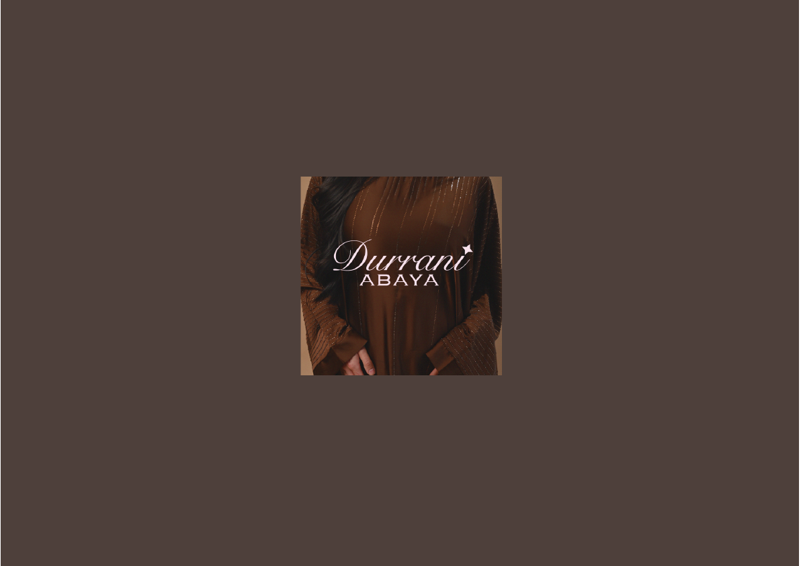
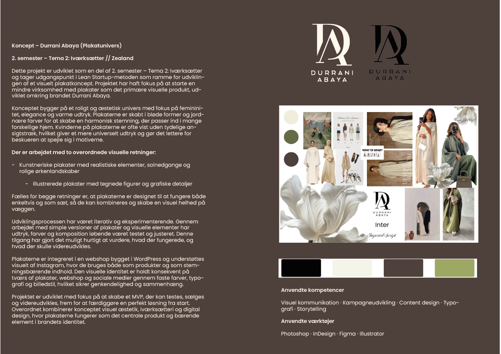
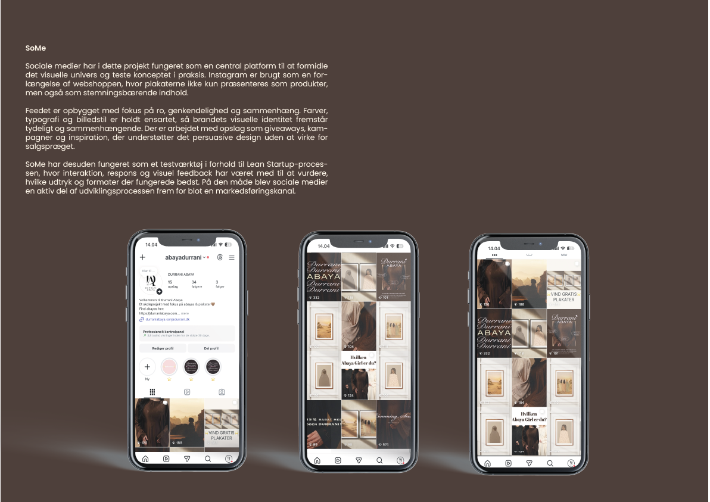
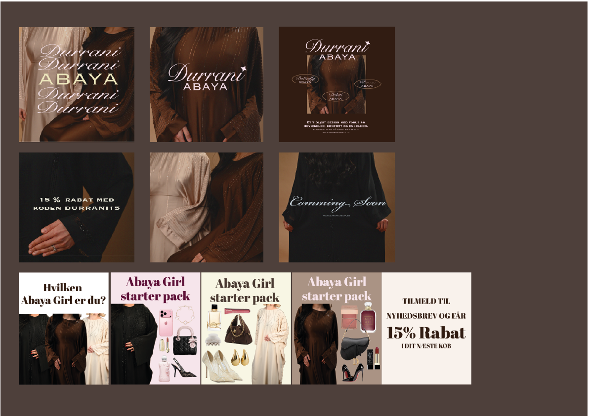
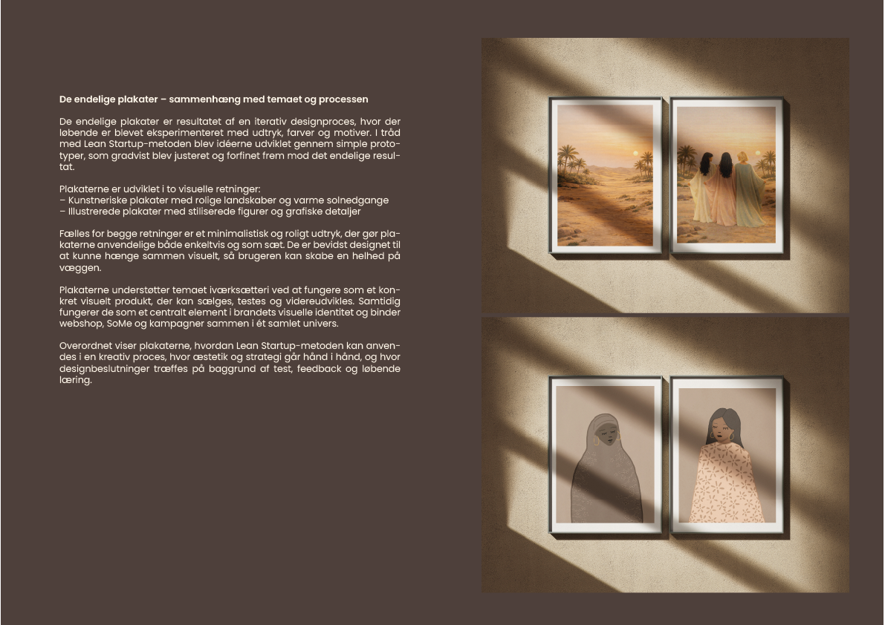
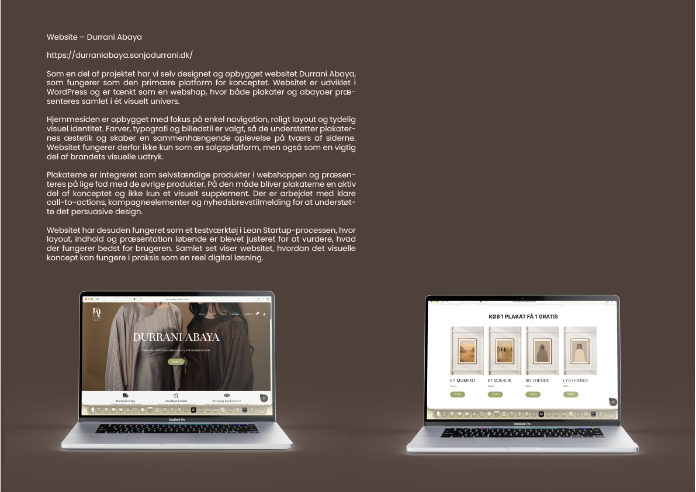
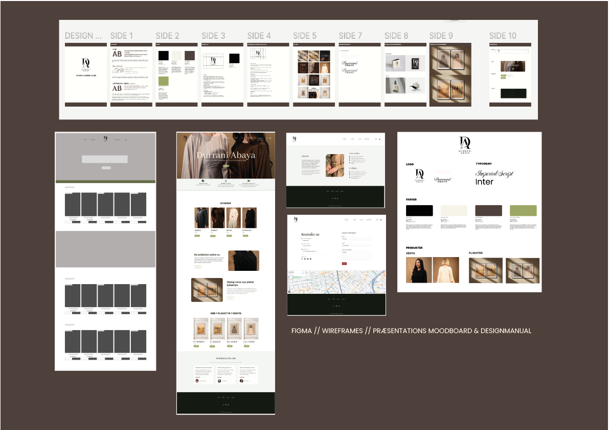
2.SEM TEMA 2.// IVÆRKSÆTTERI
Projektet tager udgangspunkt i Lean Startup-metoden og handler om udviklingen af et plakatkoncept som en del af et mindre brand, Durrani Abaya. Konceptet bygger på et roligt og æstetisk univers med fokus på femininitet, elegance og varme toner. Plakaterne er designet i bløde former og jordnære farver, og figurerne er ofte uden tydelige ansigtstræk for at skabe et mere universelt udtryk. Der arbejdes med to visuelle retninger: kunstneriske plakater med realistiske elementer og illustrerede plakater med grafiske detaljer. Plakaterne er skabt til både at fungere alene og i serier. Projektet er udviklet iterativt med fokus på at teste idéer og skabe et MVP. Plakaterne er præsenteret i en WordPress-webshop og understøttes af Instagram, hvor den visuelle identitet er holdt konsistent på tværs af platforme.
Anvendte værktøjer
Photoshop · InDesign · Figma · Illustrator
Anvendte kompetencer
Visuel kommunikation · Kampagneudvikling · Content design · Typografi · Storytelling
Link til vores hjemmeside
Branding & Visuel Identitet // fiktivt cafékoncept
CAFÉ BLOOM er et fiktivt bæredygtigt cafékoncept med fokus på økologi, ro og nærvær i bylivet. Projektets formål var at udvikle en visuel identitet, der skaber en varm og imødekommende stemning og samtidig fungerer på tværs af både print og digitale medier. Den visuelle stil er inspireret af naturens farver og former. Farvepaletten kombinerer bløde grønne nuancer, varme brune toner og lyse, luftige flader for at understøtte caféens værdier om balance og bæredygtighed. Typografien er valgt med fokus på læsbarhed og et moderne, enkelt udtryk. Som en del af opgaven har jeg arbejdet med logo, farvepalette, typografi og menudesign. Projektet viser min evne til at arbejde med branding, farver og layout samt forberede design til både skærm og print.
Anvendte værktøjer
Photoshop · Illustrator · Figma
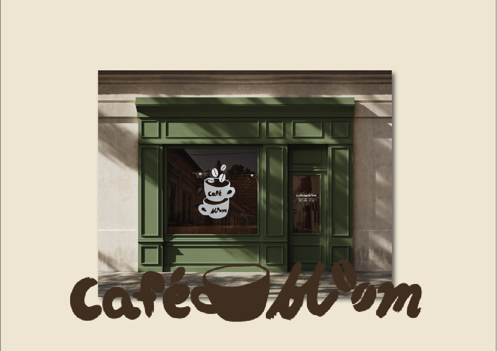
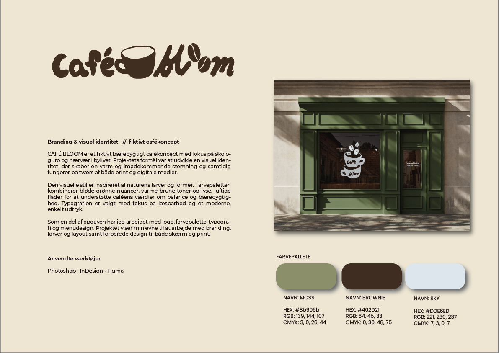
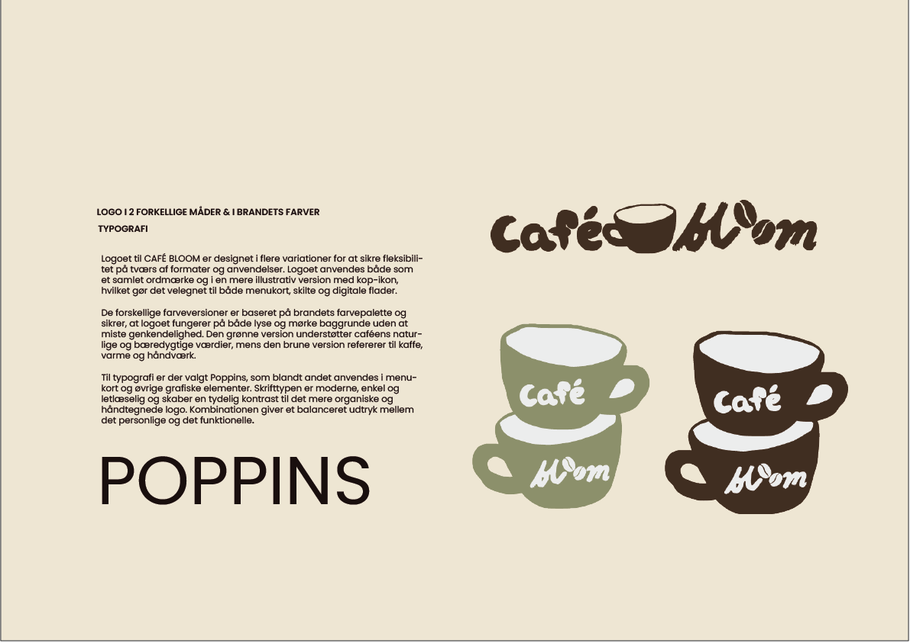
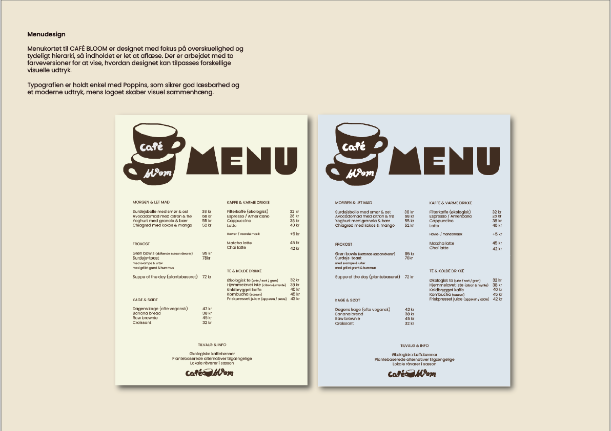
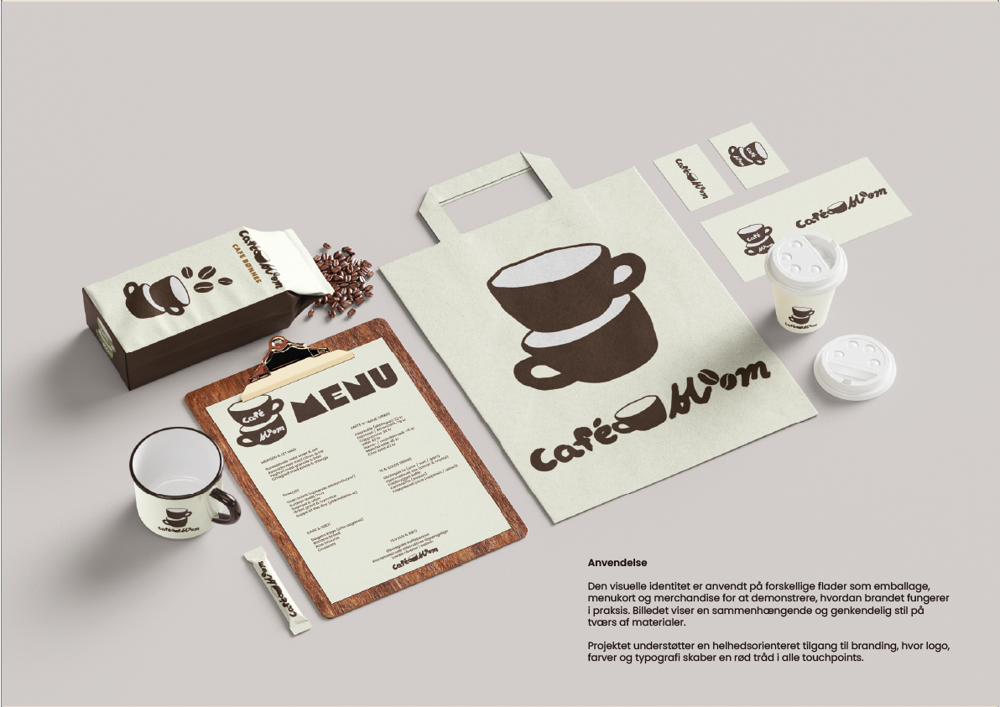
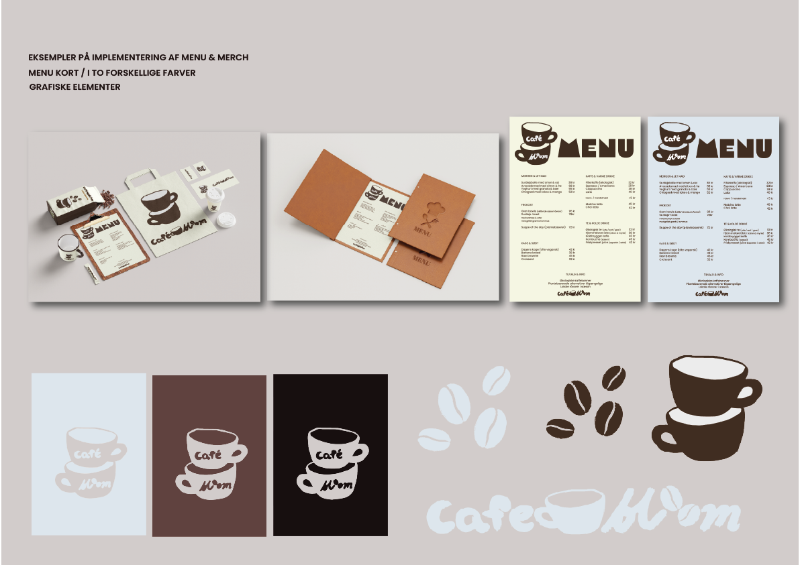